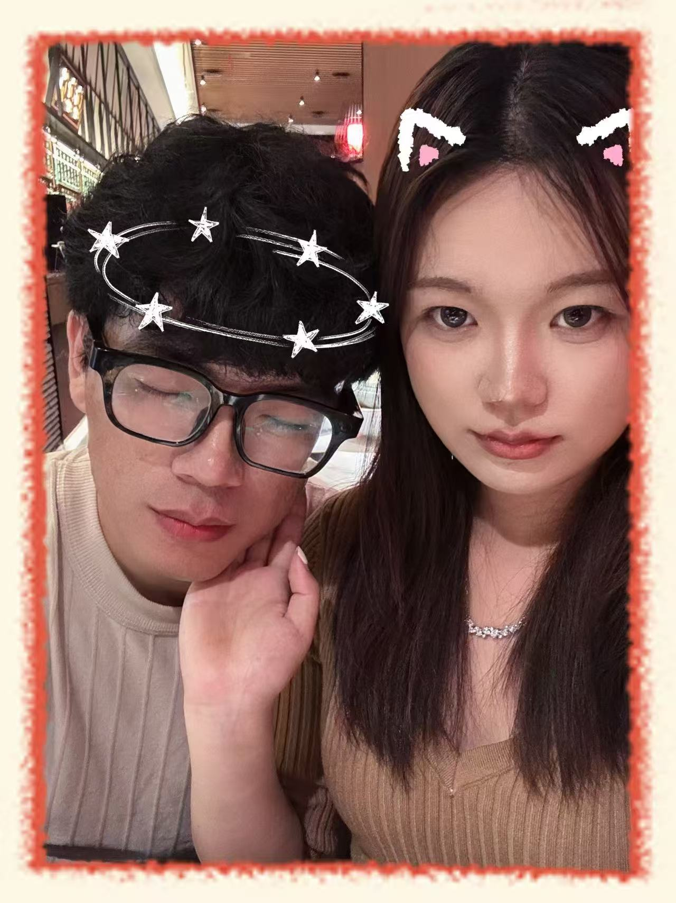
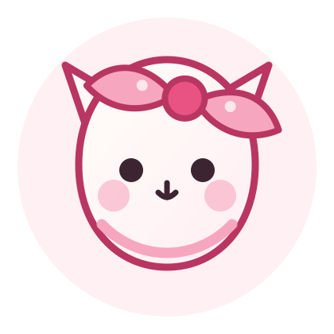
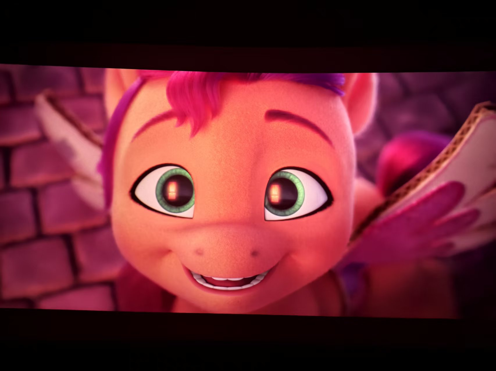
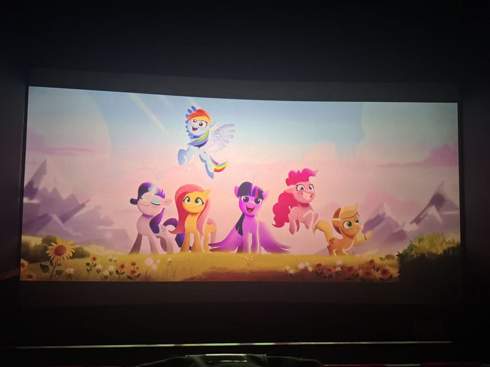
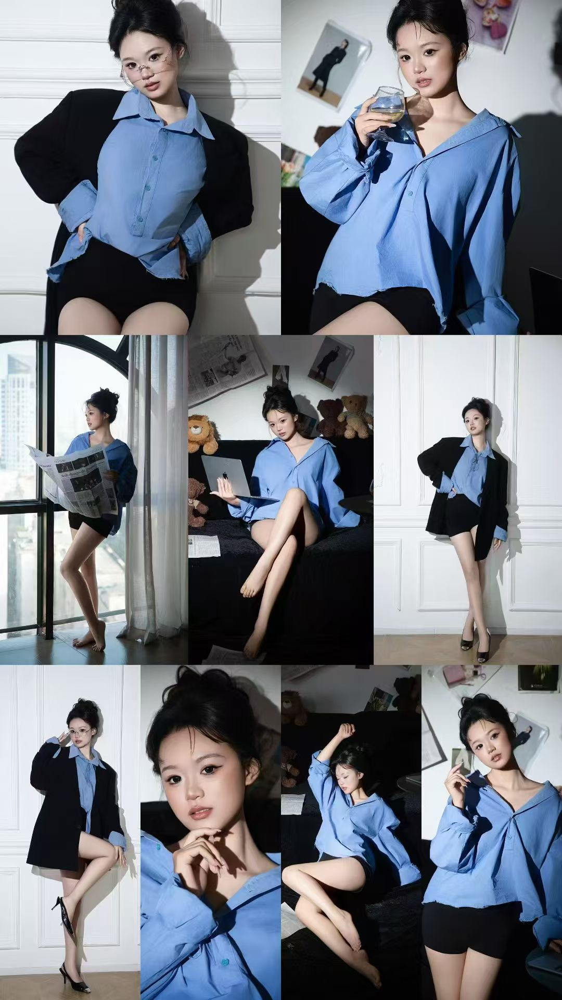
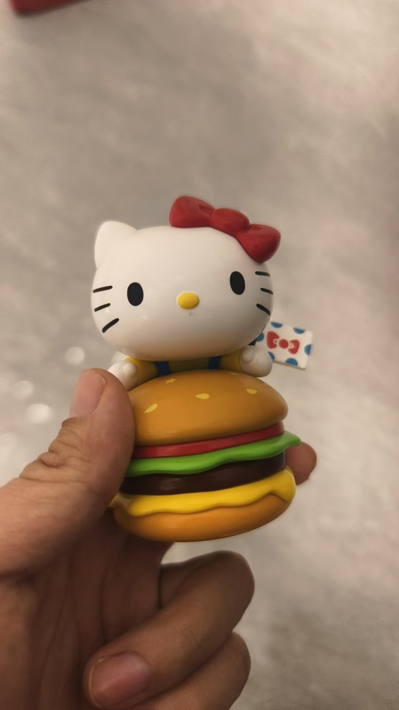
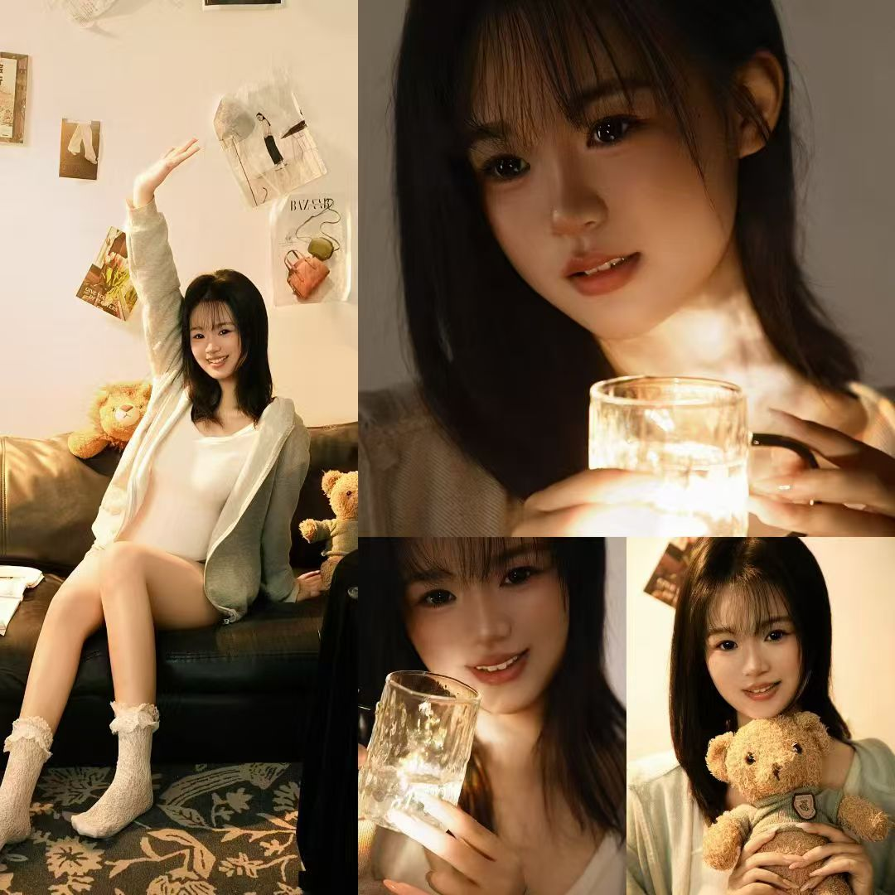
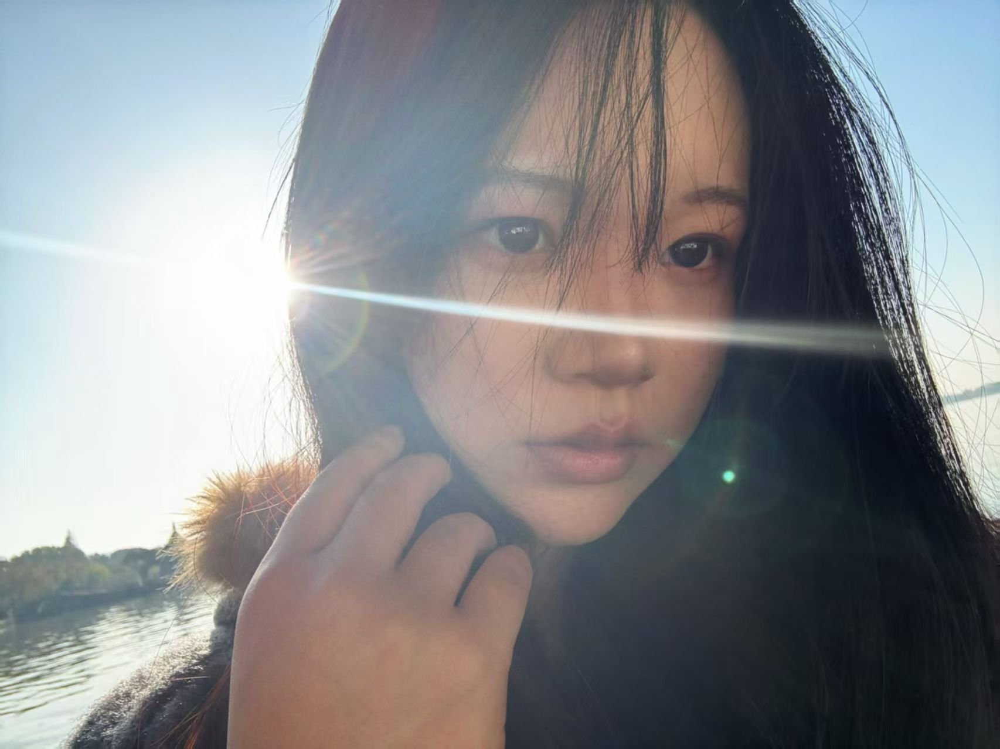
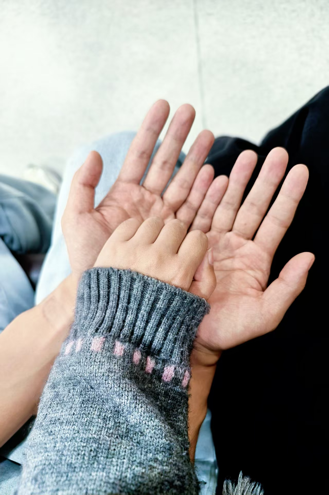
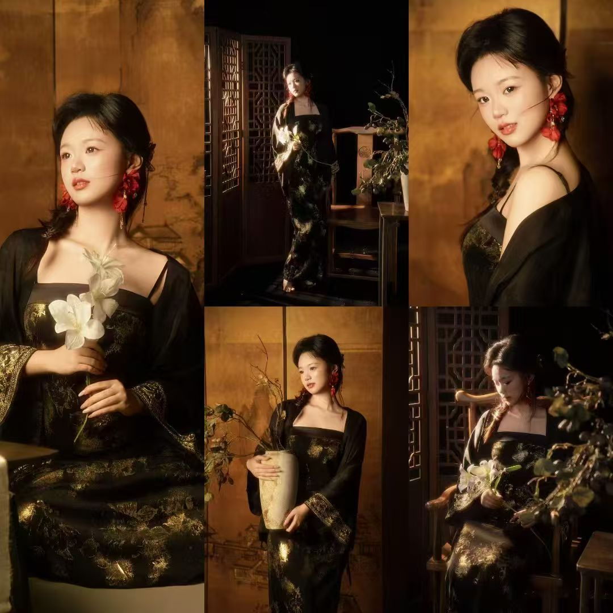

基础介绍
孙雨欣是那种会让普通日子变得柔软一点的人。她喜欢粉色，喜欢可爱的猫咪和蝴蝶结， 喜欢小零食、旅行、漂亮的小裙子，也会认真对待自己正在做的每一件事。

About Her
孙雨欣是那种会让普通日子变得柔软一点的人。她喜欢粉色，喜欢可爱的猫咪和蝴蝶结， 喜欢小零食、旅行、漂亮的小裙子，也会认真对待自己正在做的每一件事。
Little Favorites
看到粉色的时候，总会觉得这很适合她，软软的，也亮亮的。

蝴蝶结、小猫、圆圆的可爱东西，她喜欢，我也觉得很像她。
快乐有时候很简单，就是喜欢的零食、刚好的味道，还有一起分享的人。
想陪她去更多地方，把照片和路上的小事都慢慢攒起来。
她穿好看的衣服时会更亮一点，那种漂亮不是夸张，是刚刚好。
她不是只有可爱。认真起来的时候，也有很让人安心的一面。
Life Moments
已接入你提供的照片素材。后续如果要继续扩充，把新照片放入 assets/photos/ 后再替换路径即可。








Growth
她会有自己的节奏，也会努力把眼前的事情一点点做好。
她的温柔不是挂在嘴边的，是会落在一些很具体的小事里。
相处久了会发现，她可爱，也细心；柔软，也有自己的坚持。
For Her
做这个小网站，是想把你喜欢的粉色、可爱的小东西、漂亮衣服、旅行照片， 还有那些我觉得很珍贵的瞬间，都放在一个地方。
可能它还不够完美，但它是认真做的。希望你看到的时候，会觉得自己真的被好好记着。